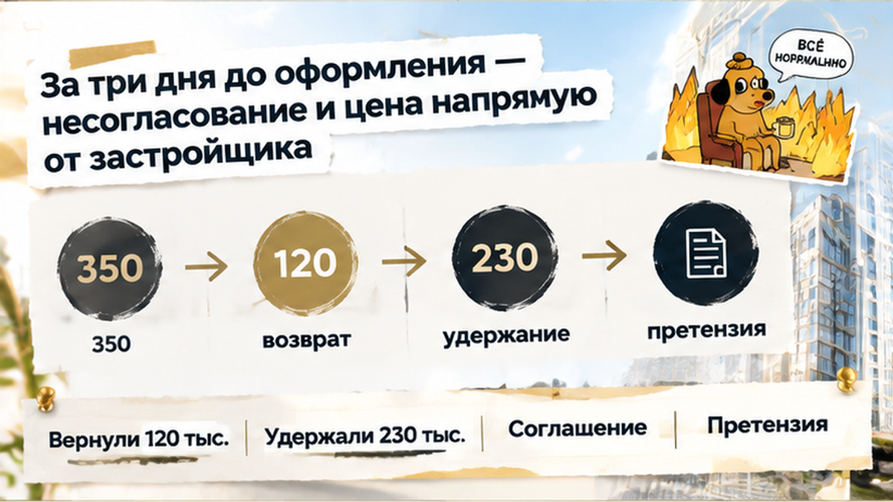
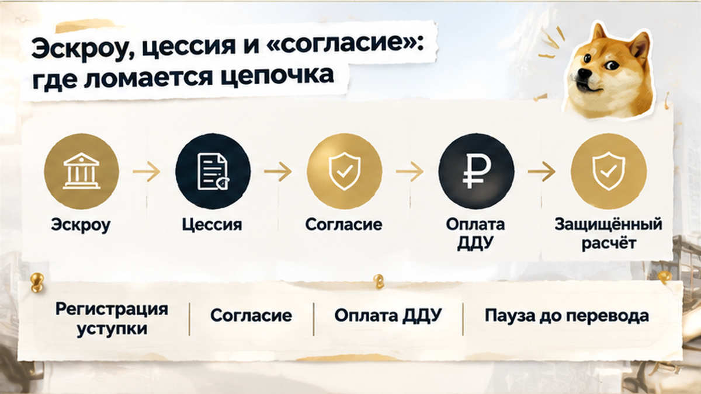

В Тюмени семья перевела 350 тысяч рублей аванса за переуступку в новостройке, а обратно получила только 120 тысяч — без прав на квартиру. За три дня до оформления выяснилось, что застройщик сделку не согласовал. До этого всё выглядело убедительно: цена ниже текущего прайса, впереди встреча в офисе продаж, деньги уже у первого дольщика. Покупатели рассчитывали, что закрепили квартиру за собой, но перевод на личный счёт продавца не заменил оформление уступки. На эскроу этот аванс тоже не попал: деньги ушли человеку, с которым ещё предстояло заключить сделку.
В Telegram и MAX разбираю покупки в новостройках Тюмени изнутри: что стоит за обещаниями продавца и какие бумаги нужны до перевода денег.
Первый дольщик уже заключил договор долевого участия — ДДУ — и предложил семье уступить свои права. Такая же квартира у застройщика стоила дороже, поэтому предложение цепляло не красивыми словами, а разницей в бюджете. Продавец попросил аванс «для фиксации» договорённости, и покупатели перевели деньги на его личный счёт.
Обычный покупатель видит здесь понятную последовательность: выбрали квартиру, договорились о цене, внесли деньги — осталось подписать бумаги. Я смотрю на другое: что именно продавец может передать и выполнены ли условия для этого. Уступают не готовую квартиру, а права по уже существующему ДДУ, и одного перевода для их перехода недостаточно.
Встреча в офисе продаж добавляла уверенности: оформление ведь планировали не на словах, у него было место. Но назначенный визит ещё не подтверждал, что исходный договор проверен, расчёты закрыты и уступку можно зарегистрировать. Семья оплатила договорённость с первым дольщиком раньше, чем получила ответы на эти вопросы.
Здесь и расходятся две вещи, которые легко принять за одну. Деньги первого дольщика по ДДУ могут находиться на эскроу, а аванс от следующего покупателя — на его личном счёте. Квартира та же, но получатель и условия расчёта другие: банковская защита не распространяется на этот перевод просто по соседству.
Между переводом и запланированным визитом в офис продаж было девятнадцать дней. Почти три недели деньги находились у продавца, хотя письменного подтверждения готовности сделки ещё не было. Покупатели уже ждали оформления, а важная часть проверки оставалась впереди.
Слово «согласование» звучит так, будто осталось получить одну подпись. На деле за ним могут стоять разные вопросы: полностью ли оплачен ДДУ, есть ли задолженность, требуется ли уведомление застройщика или отдельное разрешение по договору. Пока неясно, что именно проверяют, нельзя понять и причину возможной остановки.
Если первый дольщик рассчитался полностью, универсального требования получать согласие застройщика на каждую уступку нет — нужно смотреть условия договора. Если же покупателю передают ещё и оставшийся долг, согласие застройщика как кредитора необходимо. Поэтому я бы сначала запросил исходный ДДУ и справку об оплате, а не ориентировался только на дату встречи.
Проверка нужна не для того, чтобы усложнить покупку. Она показывает, какие права человек продаёт, какие обязательства остаются и можно ли двигаться дальше на оговорённых условиях. Здесь ответы ещё не были получены, а возможность просто отказаться без спора о деньгах семья уже отдала вместе с авансом.

За три дня до оформления семья получила ответ из офиса продаж: переуступка не согласована. Покупатели ждали встречи, после которой квартира станет ближе, а получили остановку сделки. Дата была назначена, но проверка документов до перевода денег так и не дала главного — подтверждения, что права можно передать на оговорённых условиях.
Для покупателя запись в офис продаж выглядит почти как готовая сделка: осталось приехать и подписать. Я смотрю на неё иначе: назначенная встреча — ещё не результат проверки. Пока уступка не зарегистрирована, перевод первому дольщику сам по себе не даёт права требовать квартиру у застройщика.
Но и слово «несогласование» не объясняет, кто здесь прав. Если первый дольщик полностью оплатил ДДУ, общего требования получать согласие застройщика на каждую уступку нет — нужно смотреть условия договора. Если вместе с правами покупателю передают оставшийся долг, согласие застройщика как кредитора уже необходимо. Какая именно причина остановила эту сделку, документами не установлено. Объявлять отказ законным или незаконным по одному ответу из офиса я бы не стал.
Вместо уступки семье предложили ту же квартиру напрямую от застройщика. Только цена была уже по текущему прайсу — на 420 тысяч рублей выше. Квартира та же, а бюджет другой: прежняя договорённость с первым дольщиком не обязывала застройщика сохранить его цену.
И отправленный аванс в новую покупку автоматически не засчитывался. Деньги получил один участник, а платить теперь предлагали другому. Семье пришлось бы одновременно решать две задачи: возвращать прежний перевод и искать средства на более дорогую покупку. В истории со сменой юрлица застройщика и новым ДДУ тоже нельзя было переносить старые договорённости на новые бумаги без проверки. Здесь же покупатели ещё даже не заняли место первого дольщика в договоре.
Первый дольщик вернул 120 тысяч рублей, а оставшиеся 230 тысяч назвал комиссией или удержанием. Для семьи это означало вполне конкретную вещь: покупка не состоялась, но большая часть аванса осталась у получателя. Название платежа не отвечало на простой вопрос — за что удержали деньги, если права на квартиру не передали?
Позже квартира ушла другому покупателю, у которого уступку согласовали. Почему получилось у него, имеющиеся факты не объясняют. Здесь легко достроить версию о чужом умысле, но оснований для неё нет. Установленный итог другой: эта семья осталась без квартиры и без возвращённых 230 тысяч.
Обещать, что остаток вернут после одной претензии, я не буду. Нужно сопоставить соглашение, назначение перевода и переписку: за что платили, когда деньги должны были вернуть, какие удержания стороны действительно предусмотрели. Слово «комиссия» само по себе не даёт получателю права оставить сумму себе. Но и понятное покупателю «сделки нет — верните всё» ещё нужно подкрепить документами; частичный возврат спор об остатке не закрыл.
350 тысяч аванса по переуступке — это ещё не эскроу: вы бы перевели деньги первому дольщику до письменного согласия застройщика или ждали бы официальный ответ из офиса продаж?
Покупатель смотрит на разницу в цене: «У застройщика дороже, надо брать». Я сначала открываю договор первого дольщика. Не потому, что скидка подозрительная, а потому, что нам нужны права, которые действительно можно передать. Проверяю регистрацию ДДУ, условия уступки, ипотеку и другие обременения, затем — справку о расчётах. «Всё оплачено» в переписке и документ от застройщика или банка — не одно и то же.
Следом разделяю два денежных маршрута. Один — оплата квартиры по исходному ДДУ, другой — расчёт с человеком, который продаёт права. В истории, где семейную ипотеку одобрили, а эскроу не открыли, покупка остановилась на банковском этапе. Здесь деньги вообще отправили на личный счёт продавца. Наличие эскроу у первого дольщика не делает любой последующий перевод защищённым.
| Что проверяем | Деньги на эскроу по ДДУ | Аванс первому дольщику |
|---|---|---|
| Куда ушли деньги | На специальный банковский счёт для расчётов по ДДУ. | Продавцу прав на личный счёт, если перевод сделан напрямую. |
| Что означает платёж | Оплату по исходному договору. Её подтверждают документами. | Передачу денег продавцу, но не переход прав на квартиру. |
| Какие бумаги смотреть | ДДУ и справку о полной или частичной оплате. | Соглашение: за что платим, когда деньги возвращают, что могут удержать. |
| Чем защищена сумма | Правилами эскроу для денег по ДДУ. | Условиями соглашения и способом расчёта. Эскроу автоматически не защищает. |
Отдельно читаю, что будет, если оформление остановится. В разговоре могут сказать «просто аванс», а в бумаге написать про комиссию и удержания. До перевода это условие ещё можно обсудить; после — придётся разбирать подписанное соглашение, назначение платежа и переписку. Поэтому срок возврата и основания удержания нужны на бумаге заранее, а не в обещании «если что, договоримся».
В Telegram и MAX разбираю такие развилки в новостройках Тюмени: что проверить сейчас, чтобы не спорить о деньгах потом. Оставайтесь на связи ещё на этапе выбора квартиры.

Смысл переуступки простой: вы занимаете место первого дольщика в существующем ДДУ. По статье 11 закона о долевом строительстве это возможно после полной оплаты либо вместе с переводом остатка долга. Исходный договор должен быть зарегистрирован, передаточный акт — ещё не подписан. Саму уступку тоже регистрируют: встреча в офисе продаж этого не заменяет.
При полностью оплаченном ДДУ закон не требует согласия застройщика на каждую уступку без исключений — смотрим условия конкретного договора. При переводе долга согласие застройщика как кредитора необходимо. Поэтому я прошу письменный ответ: что именно не закрыто и какой документ нужен. Не общее «согласуем», а понятный статус нашей сделки.
Отказываться от переуступки только из-за чужой потери не нужно. Но до проверки ДДУ, справки об оплате и письменного статуса оформления аванс остаётся у покупателя. Крупный расчёт стоит привязать к регистрации уступки и заранее выбрать защищённый способ передачи денег.
Пауза до перевода — не слабая позиция на переговорах. Пока деньги у вас, можно уточнять условия, обсуждать договор или выбрать другую квартиру. Именно эту свободу я и предлагаю сохранить, прежде чем фиксировать скидку рублём.